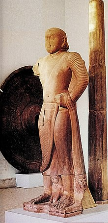

Sarnath
Sarnath is a place located 10 kilometres north-east of Varanasi near the confluence of the Ganges and the Varuna rivers in Uttar Pradesh, India. The Deer Park in Sarnath is where Gautama Buddha first taught the Dharma, and where the Buddhist Sangha came into existence through the enlightenment of Kondanna (Sanskrit: Kauṇḍinya).
Singhpur, a village approximately one kilometre away from the site, was the birthplace of Shreyansanath, the Eleventh Tirthankara of Jainism. A temple dedicated to him is an important pilgrimage site.
Also referred to as Isipatana, this city is mentioned by the Buddha as one of the four places of pilgrimage his devout followers should visit. It was also the site of the Buddha's Dhammacakkappavattana Sutta, which was his first sermon after attaining enlightenment, in which he explained the four noble truths and the teachings associated with them.
